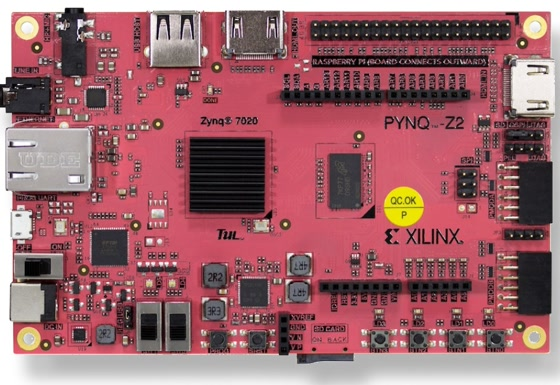
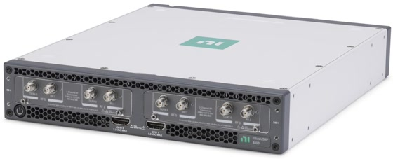

Setup
-

Gesture
A hand moves, shown here as the event camera sees it: orange for brighter, blue for darker.
-

Event camera
Each pixel reports only a change in brightness. Every 130 ms makes one frame.
-

FPGA 1 · Spiking encoder
A spiking neural network in hardware turns the events into spikes. Neuromorphic and event-driven.
1.29 ms per step -

Transmitter
USRP X410. Each spike becomes one 4 µs radio pulse in its neuron's own time slot.
-
Receiver
USRP X410. Finds each window by its sync, then reads every slot by its energy.
-
FPGA 2 · Spiking decoder
A second spiking neural network recognises the gesture from the spikes that arrived.
1.07 ms per step -
right hand wave
Decision
One of 11 gestures, after four frames. A still scene sends nothing.
Signal flow
Demo
Our works
- 2020
- End-to-End Learning of Neuromorphic Wireless Systems for Low-Power Edge Artificial Intelligence Nicolas Skatchkovsky, Hyeryung Jang, Osvaldo Simeone 54th Asilomar Conference on Signals, Systems, and Computers, pp. 166–173 DOIarXiv
- 2023
- Neuromorphic Integrated Sensing and Communications Jiechen Chen, Nicolas Skatchkovsky, Osvaldo Simeone IEEE Wireless Communications Letters, vol. 12, no. 3, pp. 476–480 DOIarXiv
- Neuromorphic Wireless Cognition: Event-Driven Semantic Communications for Remote Inference Jiechen Chen, Nicolas Skatchkovsky, Osvaldo Simeone IEEE Transactions on Cognitive Communications and Networking, vol. 9, no. 2, pp. 252–265 DOIarXiv
- 2024
- Neuromorphic Semantic Communications with Wake-Up Radios Jiechen Chen, Sangwoo Park, Petar Popovski, H. Vincent Poor, Osvaldo Simeone IEEE International Workshop on Signal Processing Advances in Wireless Communications (SPAWC), pp. 91–95 DOI
- Neuromorphic Split Computing with Wake-Up Radios: Architecture and Design via Digital Twinning Jiechen Chen, Sangwoo Park, Petar Popovski, H. Vincent Poor, Osvaldo Simeone IEEE Transactions on Signal Processing, vol. 72, pp. 4635–4650 DOIarXiv
- 2025
- Neuromorphic Wireless Split Computing with Multi-Level Spikes Dengyu Wu, Jiechen Chen, Bipin Rajendran, H. Vincent Poor, Osvaldo Simeone IEEE Transactions on Machine Learning in Communications and Networking, vol. 3, pp. 502–516 DOIarXiv
- Neuromorphic Wireless Semantic Communication with Multi-Level Spikes Jiechen Chen, Dengyu Wu, Bipin Rajendran, H. Vincent Poor, Osvaldo Simeone IEEE International Conference on Machine Learning for Communication and Networking (ICMLCN), pp. 1–6 DOI
- Online Reliable Anomaly Detection via Neuromorphic Sensing and Communications Junya Shiraishi, Jiechen Chen, Osvaldo Simeone, Petar Popovski arXiv preprint arXiv:2510.14688 arXiv
- 2026
- Neuromorphic Wireless Split Computing with Resonate-and-Fire Neurons Dengyu Wu, Jiechen Chen, H. Vincent Poor, Bipin Rajendran, Osvaldo Simeone IEEE Transactions on Cognitive Communications and Networking, vol. 12, pp. 9340–9353 DOIarXiv
- Neuromorphic Non-Orthogonal Multiple Access for Parallel Remote Inference via Vector Symbolic Architecture Jiechen Chen, Zihang Song, Dengyu Wu, Bipin Rajendran, Osvaldo Simeone arXiv preprint arXiv:2607.22155 arXiv
- Standard-Compliant Neuromorphic Integrated Sensing and Communications Aided by an Intelligent Reflecting Surface Jiho Park, Jiechen Chen, Joonhyuk Kang, Osvaldo Simeone arXiv preprint arXiv:2608.13985 arXiv